Former PostDoc Fellows |
|||||
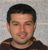 |
Luis Silva, Ph.D. Profesor Asistente Universidad de La Serena, Chile luis.silva@villanova.edu Graduated 2014 |
||||
Former Ph.D. Members |
|||||
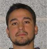 |
Andres Diaz, Ph.D. Profesor Asistente Universidad de Santiago, Chile andres.diaz@villanova.edu Graduated 2011 |
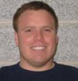 |
Kevin Woods, Ph.D. Research Engineer United States Office of Naval Research kevin.woods@villanova.edu Graduated 2012 |
||
|
Luis Silva, Ph.D. Postdoctoral Fellow Villanova University luis.silva@villanova.edu Graduated 2012 |
| ||||
Former Master Members |
|||||
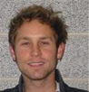 |
Bryan Hassell bryan.hassell@villanova.edu Graduated 2008 |
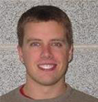 |
Ryan Anderson ryan.anderson@villanova.edu Graduated 2009 |
||
| KS
Harinadh Potluri ksharinadh.potluri@villanova.edu Graduated 2011 | 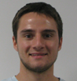 | Devin Pellicone devin.pellicone@villanova.edu Graduated 2012 | |||
| Philip Lin philip.lin@villanova.edu Graduated 2012 | 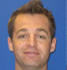 | Timothy Guild timothy.guildi@villanova.edu Graduated 2012 | |||
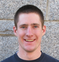 | Trevor Misera trevor.misera@villanova.edu Graduated 2013 |  | Ali Almatruk aalmatro@villanova.edu Graduated 2013 | ||
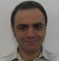 | Kayvan Abbasi kayvan.abbasi@villanova.edu Graduated 2013 | Morgaret Samerford margaret.somerford@villanova.edu Graduated 2013 | |||
| Benjamin Zuk benjamin.zuk@villanova.edu Graduated 2014 | |||||
Former Undergrate Research Assistants |
|||||
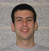 |
Robert Crawfor Research Assistantntntntnt robert.crawford@villanova.edu (215) 850-1840 Summer 2007 |
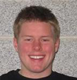 |
Thomas Baldassare Research Assistant thomas.baldassare@villanova.edu (973) 464-2925 Summer 2007 |
||
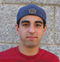 |
Jeff Steward Research Assistant jeff.steward@villanova.edu (908) 892-3496 Summer 2008 |
Trevor Misera Research Assistant trevor.misera@villanova.edu (443) 928-3366 Summer 2008 |
|||
|
Philip Lin Research Assistant philip.lin@villanova.edu (610) 609-6734 Summer 2008 |
Kevin J. Leach Research Assistant kevin.leach@villanova.edu (603) 724-7297 Summer 2008 |
||||
|
Gregory Karambelas Research Assistant gkaram01@villanova.edu (508) 451-1332 Summer 2008 |
Peter Balawajder Research Assistant peter.balawajder@villanova.edu (860) 235-5948 Summer 2008 |
||||
|
Donald Wehmann Research Assistant donald.wehmann@villanova.edu (856) 912-0484 Summer 2009 |
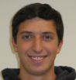 |
Nicholas Giordano Research Assistant nicholas.giordano@villanova.edu (518) 331-8844 Summer 2009 |
|||
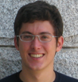 |
Brian Maissen Research Assistant brian.maissen@villanova.edu (484) 362-8956 Summer 2010 |
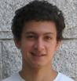 |
Jaime Fernandez Research Assistant jaime.fernandez@villanova.edu (975) 514-0842 Summer 2010 |
||
|
Russell Rioux Research Assistant rrioux@villanova.edu (617) 921-1015 Summer 2011 |
Tom Gacka Research Assistant tom.gacka@villanova.edu (412) 417-4346 Summer 2011 |
||||
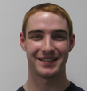 |
Gregory Michel Research Assistant gmichel@villanova.edu (616) 965-0169 Summer 2012 |
Isaac Rose Research Assistant irose01@villanova.edu (215) 370-9861 Summer 2012 and 2013 |
|||
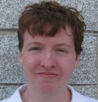 |
Richard Kenney Research Assistant rkenney@villanova.edu (610) 715-8250 Summer 2013 | 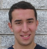 |
Evan Pelletier Research Assistant epelle01@villanova.edu (860) 944-5777 Summer 2013 |
||
|
Antonio Dole Research Assistant adole@villanova.edu (908) 892-5886 Summer 2013 | 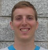 |
Joseph Schaadt Research Assistantnt jschaadt@villanova.edu (408) 505-4560 Summer 2013 |
|||
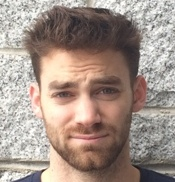 |
Alexander Poultney Research Assistant apoult01@villanova.edu Summer 2014 |
||||